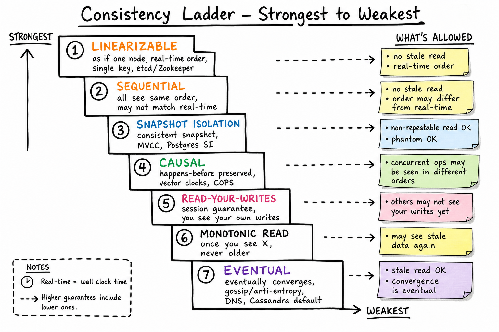

Consistency Models // Concept Primer
Distributed reads can return stale, out-of-order, or fork-shaped data. A consistency model is the precise promise the system makes about what views of the data are possible. Knowing the ladder — from linearizable down to eventual — is what separates "it's eventually consistent" from a senior answer.

The consistency ladder, strongest at top: Linearizable → Sequential → Snapshot Isolation → Causal → Read-Your-Writes → Monotonic Read → Eventual. Each step relaxes a guarantee; sticky notes show what's allowed at each level.
01 — What Problem It Solves
The instant you replicate data across two machines, you can no longer behave like a single register. Reads can return values from different points in time; reads of different keys can be interleaved in surprising orders; the same client may even see its own writes vanish on a subsequent read. The space of possible anomalies is large.
A consistency model is the formal contract: given my reads and writes from any client, what orderings of operations is the system allowed to produce? Knowing the contract lets you reason about correctness without having to think about replication mechanics every time.
The interview-defining sentence: "Eventual consistency means nothing without a session guarantee — tell me which one." Read-your-writes? Monotonic-read? Causal? Those are the precise versions of "eventual" that real apps need.
01a — Core Vocabulary
| Term | Definition | Notes |
|---|---|---|
| Linearizable | Every op appears to take effect atomically at some instant between invocation and response, in real-time order. | Single-key; "as if one node." The gold standard. |
| Sequential consistency | All clients see all ops in some single global order; that order doesn't have to match real time. | (Lamport, 1979.) Multi-CPU memory model. |
| Serializable | The effect of concurrent transactions equals some serial execution of them. | About multi-key transactions, not single-key real-time. |
| Strict serializable | Serializable + linearizable. | Spanner's claim. Strongest practical guarantee. |
| Snapshot isolation (SI) | Each transaction reads from a consistent snapshot taken at its start; writes don't conflict on rows. | Postgres default for SERIALIZABLE-named; Oracle, MySQL InnoDB. |
| Causal | If A happens-before B, every observer sees A then B. Concurrent ops may be seen in any order. | Vector clocks. Achievable without consensus. |
| Read-your-writes | A client always sees its own writes on subsequent reads. | Session guarantee. |
| Monotonic read | Once a client has seen a value, it never sees an older value on subsequent reads. | Session guarantee. |
| Monotonic write | Writes from a single client are applied in the order issued. | Session guarantee. |
| Writes-follow-reads | If you read X and then write Y, everyone sees X-then-Y. | Session guarantee. |
| Eventual | If no new writes are made, all replicas eventually converge. | Weakest useful level. Pair with session guarantees. |
02 — The Ladder
From strongest to weakest. Each step relaxes a property in exchange for something operational: lower latency, higher availability, less coordination, or simpler implementation.
| Level | Guarantee | Cost | Real example |
|---|---|---|---|
| Strict serializable | Linearizable + multi-key serializable. | Highest: Paxos + TrueTime / clocks. | Spanner, FoundationDB. |
| Linearizable | Single-key real-time ordering. | Quorum on every op. | etcd, ZooKeeper, Kafka coordinator. |
| Sequential | One global order, not real-time. | Consensus; no clock alignment. | Most consensus systems' default. |
| Serializable (txn) | Concurrent txns equal some serial schedule. | Locks or OCC; multi-key. | Postgres SERIALIZABLE (SSI). |
| Snapshot Isolation | Consistent snapshot per txn; write-write conflicts caught. | MVCC. | Postgres default, Oracle, MongoDB txns. |
| Causal | Happens-before preserved; concurrent ops can be seen in any order. | Vector clocks, version vectors. | COPS, Bayou; conceptual in Riak. |
| Read-your-writes | Client sees own writes. | Session pinning or LSN cookie. | DynamoDB session, RDS w/ replica routing. |
| Monotonic read | No going backwards within a session. | Sticky session. | Mongo readPreference=primaryPreferred. |
| Eventual | Converges if writes stop. | None; just async replication. | DNS, Cassandra ONE, S3 (older), gossip systems. |
Hierarchy: every stronger level implies the levels below it. If you have linearizability, you also have read-your-writes, monotonic-read, etc., for free.
04 — Linearizable vs Serializable (the trap)
Interviewers love this distinction.
| Linearizable | Serializable | |
|---|---|---|
| Scope | Single object (key, register). | Multiple objects in a transaction. |
| Real-time? | Yes — if A finishes before B starts, A's effect is visible to B. | No — the equivalent serial order can be any order. |
| Concurrency? | No — one-at-a-time per object. | Yes — concurrent txns OK as long as outcome equals some serial schedule. |
| Example system | etcd, ZooKeeper, atomic register. | Postgres SERIALIZABLE, single-node DB locks. |
"Strict serializable" = both
A multi-key transaction system that also respects real-time order. Spanner and FoundationDB. This is the strongest real-world guarantee.
The classic anomaly
// Two clients, two keys, serializable system but NOT linearizable: Client A: write X = 1 (commits at T=1) Client A: ack received (T=2) Client B: read X (issues at T=3, real-time after A's write) Serializable: B may see X = 0 (the schedule is "B then A") Linearizable: B MUST see X = 1 (real-time order forces it)
That's why bank ledgers want strict serializable, not just serializable: you cannot have a deposit "happen before" but a balance read see no deposit.
05 — Causal Consistency
The strongest guarantee you can get without consensus — achievable in AP systems. If event A "causally precedes" B (same client, or B reads what A wrote), then every observer must see A before B. Truly concurrent events can be seen in any order.
Implementation: vector clocks
Each replica keeps a counter; each write carries the writer's vector of seen counters.
Replica R1: V = {R1:5, R2:3, R3:7}
Replica R2: V = {R1:5, R2:4, R3:7} ← R2 is one write ahead of R1 on R2's stream
Two writes W1=(...) and W2=(...) are concurrent
iff neither vector dominates the other.
On read, a client passes the vector of last-seen write. Replica must apply all causally-preceding writes before responding. If it can't (still propagating), block or read from a more up-to-date replica.
Why it matters
Examples where you need causal: "A replied to B's comment" — you must not see A's reply before B's comment. Social network feeds, collaborative editors. Linearizable would be overkill; eventual would allow the temporal inversion.
Real systems: COPS (academic), Bayou, parts of Riak, Yjs/CRDTs implicitly.
06 — Session Guarantees
The four session-level promises you compose to make eventual consistency usable. Together they're sometimes called "PRAM consistency" or "session consistency".
| Guarantee | Promise | How to implement |
|---|---|---|
| Read-your-writes | You see your own writes on subsequent reads. | Pin reads to leader for N seconds post-write; or write-LSN cookie that replica blocks on. |
| Monotonic read | You never see older data than you already saw. | Sticky session (always hit same replica), or LSN cookie. |
| Monotonic write | Your writes are applied in order issued. | Per-session sequence number; serialize at primary. |
| Writes-follow-reads | If you read X and wrote Y, others see X then Y. | Embed read-version in write; replica applies in dependency order. |
Most user-facing "eventual" systems are actually eventual + read-your-writes + monotonic-read. The naked term "eventual" is almost never what an app wants.
07 — Eventual Consistency, Precisely
"If writes stop, all replicas eventually converge to the same value." That's the only formal promise. In practice:
- Convergence mechanism matters: gossip (Cassandra), anti-entropy with Merkle trees (Dynamo), CDC replay (Kafka-fed views), CRDTs (Riak).
- Convergence latency is bounded operationally (milliseconds to seconds) but not by the model.
- Conflict resolution is required: LWW (clock-based, lossy), vector clocks (surface to app), CRDTs (provably commutative).
- No real-time order, no causality, no session guarantee unless you bolt them on.
Anti-entropy: Merkle tree exchange
Each replica builds a Merkle tree over key ranges. Periodically (or on read), two replicas exchange root hashes. Match: done. Differ: recurse into subtrees, repair only the diverging keys.
This is how Dynamo, Cassandra, and Riak silently repair drift between nodes without exchanging the entire dataset.
08 — SQL Isolation Levels ↔ Distributed Consistency
Classic database isolation levels are a separate (but overlapping) hierarchy — they're about transactions on a single node, but mapped to distributed systems via MVCC and consensus.
| SQL level | Anomalies allowed | Distributed equivalent |
|---|---|---|
| Read Uncommitted | Dirty reads. | Roughly eventual (but worse: see uncommitted data). |
| Read Committed | Non-repeatable reads, phantoms. | Postgres default; visible only committed values, but rows can change between reads. |
| Repeatable Read | Phantoms (in standard); none (in MySQL/Postgres which actually do SI here). | Snapshot Isolation in most engines. |
| Snapshot Isolation | Write-skew anomaly. | MVCC-based; not in SQL standard but very common. |
| Serializable | None (txn-level). | Postgres SSI, CockroachDB. Strictly stronger than SI. |
| Strict serializable | None at all. | Spanner, FoundationDB. |
Gotcha: "REPEATABLE READ" in MySQL gives you Snapshot Isolation, not the SQL-standard meaning. The standard names are misleading; always pick by anomalies allowed, not by name.
09 — How Each Level Is Built
| Level | Implementation |
|---|---|
| Linearizable single-key | Quorum reads + writes (W+R>N) or consensus (Raft/Paxos). Every op coordinates. |
| Strict serializable txn | Paxos-replicated WAL + globally-ordered timestamps. Spanner: TrueTime, ~10ms commit-wait. CockroachDB: HLC + uncertainty intervals. |
| Snapshot Isolation | MVCC: each write creates new version; reads pin to a snapshot timestamp; commit checks for write-write conflicts. |
| Causal | Vector clocks attached to every value; reads block until all causal dependencies have arrived at the replica. |
| Read-your-writes | (a) Sticky session by user_id to one replica; (b) LSN cookie returned with write & required on read; replica blocks until caught up. |
| Monotonic-read | Sticky session; or per-client max-version cache. |
| Eventual | Async replication + gossip / anti-entropy + conflict resolution (LWW, vector clocks, CRDT). |
10 — Where It Shows Up
- Key-Value Store — W=R=quorum gives single-key strong reads.
- Payment Gateway — linearizable / strict serializable for the ledger.
- Twitter — eventual + read-your-writes (you must see your own tweet).
- WhatsApp — per-conversation causal order; eventual cross-conversation.
- Food Delivery — causal for order state transitions.
- Uber — linearizable for ride state; eventual for driver location.
- Stock Exchange — strict serializable for order book.
- Postgres — SI default, SSI optional.
- Spanner — strict serializable globally.
- Cassandra — tunable (ONE = eventual, QUORUM = ~linearizable).
Related primers: CAP/PACELC, Replication.
11 — Common Interview Probes
- "What does W=R=quorum buy you exactly?"
- "What's the difference between serializable and linearizable?"
- "Eventual consistency — what session guarantees do you add for a usable system?"
- "What anomaly does Snapshot Isolation allow that serializable doesn't?"
- "How would you give a user read-your-writes against a system with 50ms replication lag?"
- "Causal consistency — what data structure do you maintain?"
- "Why is Spanner 'strict serializable' instead of just 'serializable'?"
12 — Interview Q&A
What does W = R = quorum actually guarantee?
That every read intersects with every write in at least one replica. So the latest write is in your read set; if you pick the highest-version reply you'll see it. It gives strong-quorum single-key consistency — close to linearizable but not exactly: concurrent writes can race, and no real-time ordering across keys.
Linearizable vs serializable — one-line difference?
Linearizable is about real-time order on a single object; serializable is about producing some serial schedule of multi-object transactions. They're orthogonal — you can have serializable without linearizable (Postgres on a single node is serializable for a multi-row txn but doesn't have linearizability across separately-issued single-row ops). Spanner offers both = strict serializable.
What's the cheapest way to give a user read-your-writes?
Two patterns: (1) sticky session — route reads for the next ~5s after a write to the primary; (2) return the LSN/version with the write response; on subsequent reads, include the LSN and have the replica block (or 503) until it's applied. AWS Aurora and DynamoDB both implement variants of (2). It's per-session, so it doesn't impose linearizability on the whole system.
What anomaly does SI allow but serializable doesn't?
Write skew. Two transactions read overlapping data, make decisions, write disjoint data — both pass SI's write-conflict check but violate a multi-row invariant. Classic example: two doctors both go off-call because each sees one other still on-call; SI lets both commit. Serializable (SSI in Postgres) catches it by tracking read-write dependencies and aborting one.
Why isn't "eventually consistent" enough?
Because "eventually" says nothing about my session. A user updates their profile, refreshes, sees old data — the system is still "eventually consistent" but unusable. You always layer at least read-your-writes + monotonic-read to make it tolerable. "Eventual" alone is a marketing term; in practice you pair it with session guarantees.
How does causal consistency work without consensus?
Each write carries a vector clock encoding its dependencies (which other writes it knew about). Replicas accept writes only after all dependencies have arrived; reads must see all causally-preceding writes. No global coordination needed — just metadata bookkeeping. Cost: vector size grows with number of replicas / clients; pruning required at scale.
Why is Spanner "strict serializable" and not just serializable?
Strict serializable = serializable (multi-key txns) + linearizable (real-time order). Spanner uses Paxos for replication + TrueTime to assign globally-ordered commit timestamps with bounded uncertainty (~7ms). The commit-wait ensures any later transaction sees a strictly-greater timestamp — preserving real-time order even across regions. Cost: ~10ms commit-wait per transaction.
How does MVCC enable SI?
Each write creates a new version of the row, tagged with the transaction's commit timestamp; old versions are kept until no active txn might still need them. A transaction reads from the snapshot timestamp it started at — ignoring later versions. Writes check that no other concurrent txn has already written the same row (write-write conflict detection). Postgres VACUUM removes obsolete versions.
What's the cheapest way to add monotonic-read?
Sticky session — the same user always hits the same replica. As long as no individual replica goes backward (and they don't), monotonic-read holds. Cheap to implement (hash by user_id at the LB), but ties a user to one replica's availability. Add LSN cookies as the fallback for cross-replica continuity.
Can a system be "linearizable" cross-region?
Yes (Spanner, CockroachDB) but it costs latency proportional to the cross-region RTT for every write. Practically, most multi-region systems give up cross-region linearizability and offer it only within a region, plus causal or eventual across regions. The cost-benefit rarely favours global linearizability outside Google scale.
What conflict-resolution strategies pair with eventual?
LWW (timestamp-based, lossy; default in Cassandra), vector-clock-based with app-level merge (Dynamo, Riak), CRDTs (provably commutative data types — G-Counter, OR-Set, RGA-Tree). For collaborative text, CRDTs (Yjs, Automerge) or OT. The strategy is part of the system's "consistency model" in practice.
SDE2 vs SDE3 differentiator?
| SDE-2 | SDE-3 |
|---|---|
| Names strong/eventual. Knows linearizable is "strongest". States CAP. | + distinguishes linearizable vs serializable vs strict serializable, names the 4 session guarantees, explains how Snapshot Isolation differs from serializable (write skew), implements read-your-writes via LSN cookies, names causal consistency via vector clocks, maps SQL isolation levels to distributed equivalents, explains anti-entropy via Merkle trees, picks per-query consistency rather than per-system |